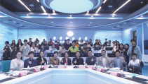
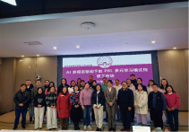
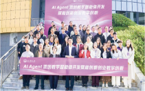
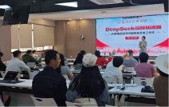
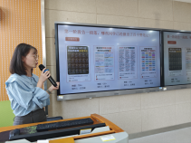
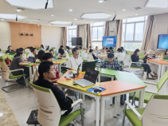

专注于新媒体、设计、电商、经管等新商科及通识教育领域，结合人工智能（AI）前沿趋势，为高校提供“AI+微专业”建设解决方案
帮助学校快速响应产业需求，打造精准对接岗位能力的特色微专业，培养具备跨学科知识和实战技能的复合型人才
2023年以来，秋叶团队已携手华中科技大学、广西师范大学、武汉职业技术大学等高校，成功落地微专业共建项目
| 序号 | 合作院校 | 合作项目 |
| 1 | 华中科技大学 | 智能新媒体 微专业共建 |
| 2 | 广西师范大学 | 数字创新与创业管理微专业共建 |
| 3 | 广西师范大学 | 东盟电商数字创客微专业共建 |
| 4 | 武汉职业 技术大学 | 全媒体微专业共建 |






与华中科技大学新闻学院共建
新媒体专业人才培养
与广西师范大学经济管理学院
创新创业学院《东盟电商数字创客微专业》共建合作
与广西师范大学创新创业学院
国际教育学院《数字创新与创业管理》微专业共建合作
与武汉职业技术大学传媒学院
全媒体专业共建
AI+微专业共建案例